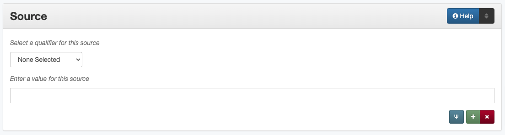

Source
Definition
Information about a resource from which the current resource is derived.
Where Can the Source Information be Found?
For any type of item, source describes an original (physical or digital) resource from which the current resource is derived and may be found:
by examining the item
in accompanying or supplementary information
How Source Works in the Metadata Form
Parts:
Source qualifier – drop-down menu
Source – text field
- Repeatable?
Yes
- Required?
No (more information)
How Should the Source be Filled in?
This field is only used if the item is:
a derivation (a single map from a book, an article from a journal, etc.)
an item that was part of a larger event (a presentation from a conference, a piece from an exhibition, etc.)
Formatting is not strictly enforced in this field, but it is helpful to list information consistently:
include any known relevant information
use a standard citation format, if applicable
Guideline |
Example |
|---|---|
For a publication, give any bibliographic information necessary to identify the original resource
|
Marshall City Directory, 1937. Rochester: Keiter Directory Co., 1937. V. 1. |
For serials, include:
|
Anabiosis: the Journal for Near-Death Studies, 3(2), International Association for Near-Death Studies, December 1983, pp. 203-206 |
For an event, include information such as:
|
14th International Conference on Knowledge Management, November 9-10, 2018. Vancouver, Canada |
Choose the appropriate relation qualifier from the controlled vocabulary
Note that published conference proceedings should be treated as a publication source (book or journal), while non-published components (e.g., posters or presentations) should use the conference or event as the source
If none of the qualifiers applies to the item, choose “Other”
Other Examples:
- Scanned map from a book
Book: “From the German edition of P.F.X. Charlevoix, Histoire general des voyages, 1754.”–Almagre books, list 47A.
- Article from a conference
Conference: Annual Conference of the North American Chapter of the Association for Computational Linguistics (NAACL), 2010, Los Angeles, California, United States
- Article published in a journal
Journal: Government Information Quarterly, 2008. p. 66-89
- Presentation from a preconference
Conference: 3rd Annual Digitization Expo [Pre-conference], Texas Library Association (TLA) Annual Convention, 2010, San Antonio, Texas, United States
- Map from an atlas
Atlas: Geologic Atlas of the United States, Llano-Burnet Folio No. 183, Washington: Geological Survey (U.S.), 1912
- Clipping/article from a newspaper
Newspaper: “King State Dependent on South Parkers,” Forward Times, Houston Texas, August 9, 1975, pp. 7A-8A
- Assignment from a class course
Academic Course: JOUR 5260 Qualitative Research Methods, University of North Texas Dallas, Fall 2016
- Photograph from an art exhibit
Exhibition: Young Latino Artists, Mexic-Arte Museum, Austin, Texas, June 13-September 7, 2014
- Output from a grant program
Grant: National Science Foundation (NSF), Ethics Education in Science and Engineering (EESE) Grant, Award #1252692
- Photograph from a non-defined type of event
Other: Three Minute Thesis (3MT®) Final Competition, University of North Texas, Denton, Texas, November 17, 2018
Resources
Worldcat via FirstSearch (UNT staff/students can get to OCLC records through electronic resources)
More Guidelines:
Comments
To specify other resources which are judged to be significantly related to the current resource in some fashion, use the Relation element.
Information in this field may also overlap with information entered in the Citation element.